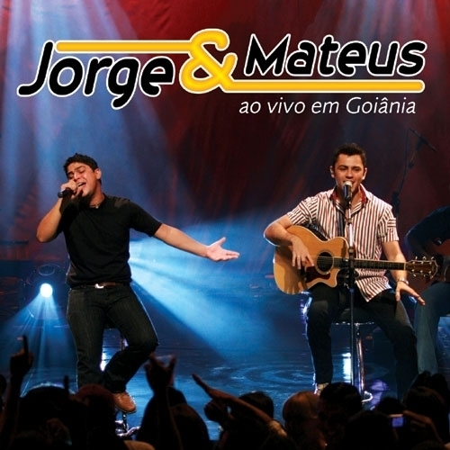
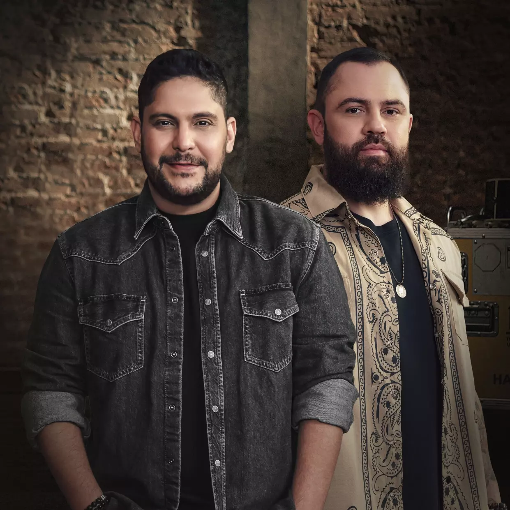
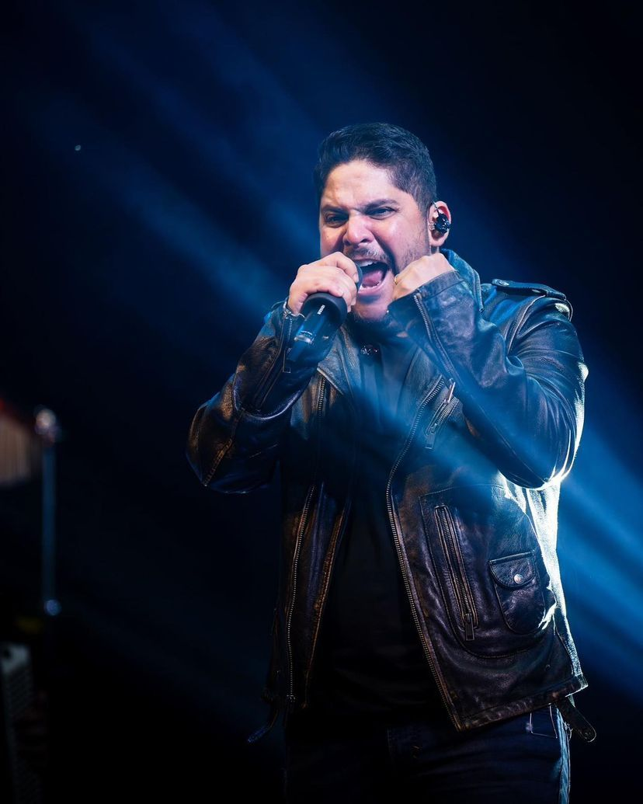
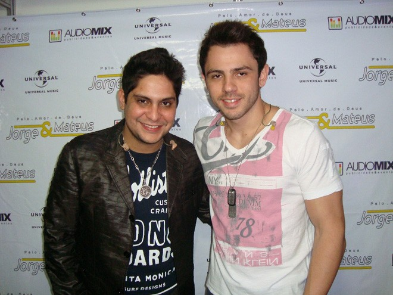
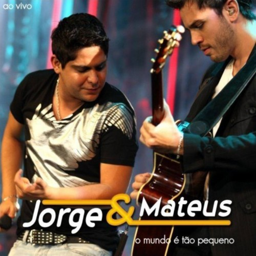
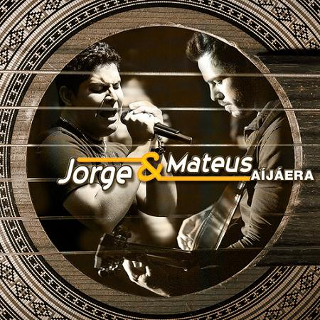
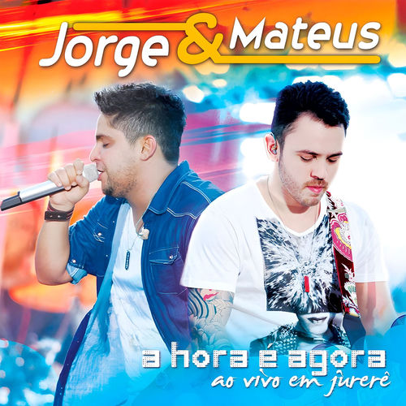
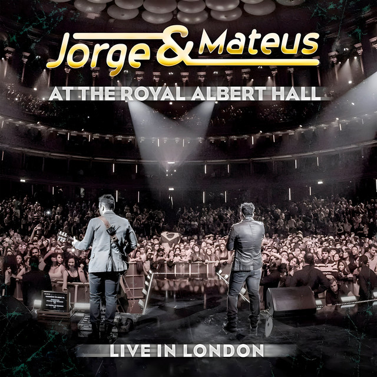
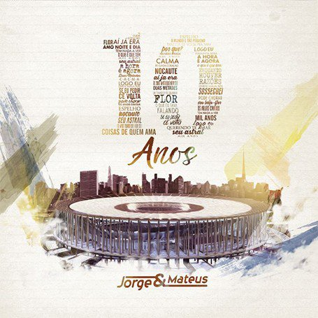

Ao Vivo em Goiânia
2007

Conheça a trajetória de Jorge & Mateus, relembre os maiores sucessos e teste o que você sabe sobre a dupla.

Jorge Alves Barcelos
Nascido em 1982, estudou Direito. Aos 17 anos, cantou “Como Vai Você”, de Roberto Carlos, no Festival de Itumbiara. É casado com Rachel Boscatti e pai de três filhos.
Mateus Pedro Liduário de Oliveira
Nascido em 1986, estudou Agronomia. Aos 13 anos, cantou “Voa Liberdade”, de Jessé, no mesmo festival, sem conhecer Jorge. É casado com Marcella Barra desde 2016 e pai de Dom e Flor.

Nascidos e criados em Goiás, Jorge e Mateus cresceram ouvindo o som das modas de viola e das grandes duplas que marcaram o sertanejo. Foi ali, entre a família e os amigos, que o amor pela música começou a tomar forma.

No início dos anos 2000, a parceria virou dupla. Com voz, violão e muita vontade de crescer, Jorge & Mateus começaram a se apresentar e a conquistar o público, show após show.

As primeiras músicas de sucesso passaram a tocar nas rádios e a ganhar espaço nas plataformas digitais. O que era sonho virou realidade, e a dupla passou a ser reconhecida em todo o país.

Hoje, Jorge & Mateus levam a sua música para grandes públicos em turnês por todo o Brasil, com shows marcados pela emoção, pelos grandes sucessos e pela conexão com os fãs.

2007

2009

2010

2012

2013

2016
Responda as perguntas, veja sua pontuação e descubra se você é fã de verdade.
Testar meus conhecimentos